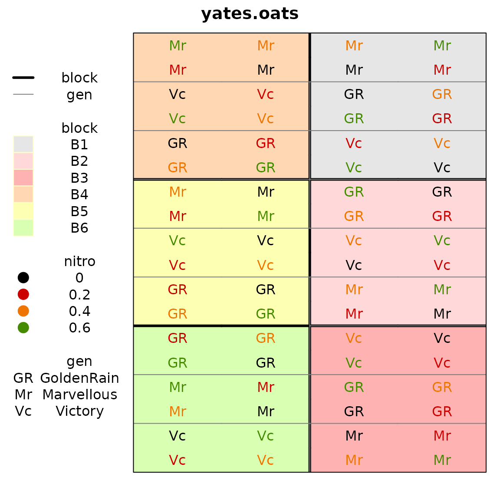
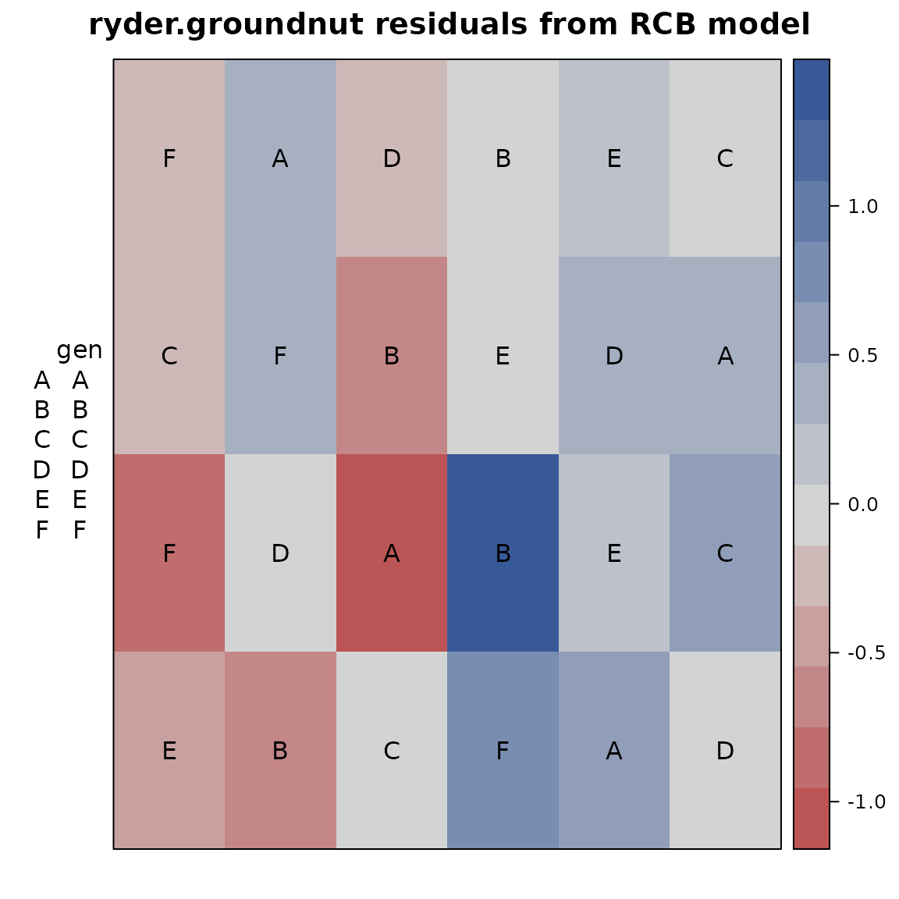

Plotting field maps with the desplot package
Kevin Wright
2025-09-18
Source:vignettes/desplot_examples.Rmd
desplot_examples.RmdAbstract
This short note shows how to plot a field map from an agricultural experiment and why that may be useful.
R setup
library("knitr")
knitr::opts_chunk$set(fig.align="center", fig.width=6, fig.height=6)
options(width=90)Example 1
First, a plot of the experimental design of the oats data from Yates (1935).
library(agridat)
library(desplot)
data(yates.oats)
desplot(yates.oats, block ~ col+row,
col=nitro, text=gen, cex=1, out1=block,
out2=gen, out2.gpar=list(col = "gray50", lwd = 1, lty = 1))
Example 2
This next example is from Ryder (1981).
Fit an ordinary RCB model with fixed effects for block and
genotype. Plot a heatmap of the residuals.
library(agridat)
library(desplot)
data(ryder.groundnut)
gnut <- ryder.groundnut
m1 <- lm(dry ~ block + gen, gnut) # Standard RCB model
gnut$res <- resid(m1)
desplot(gnut, res ~ col + row, text=gen, cex=1,
main="ryder.groundnut residuals from RCB model") Note the largest positive/negative residuals are adjacent to each other, perhaps caused by the original data values being swapped. Checking with experiment investigators (managers, data collectors, etc.) is recommended.
Infrequently asked questions
How do I change the ordering of panels?
Make sure that the panel variable is a factor and then change the levels of the factor.
In the example below, the first three panels are set to the levels C1, C3, C5. The other levels remain in the same (relative) order.